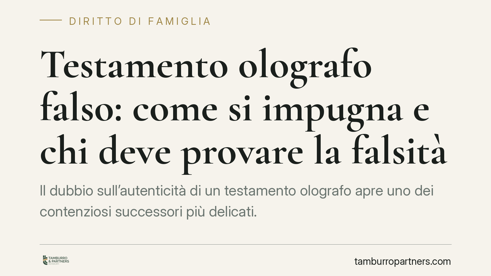

Testamento olografo falso: come si impugna e chi deve provare la falsità
Il dubbio sull'autenticità di un testamento olografo apre uno dei contenziosi successori più delicati. Contestare la provenienza della scheda non equivale a chiederne la nullità: la Cassazione a Sezioni Unite ha fissato una regola precisa su quale azione promuovere e su chi grava l'onere della prova. Vediamo cosa dice la norma e come si imposta la contestazione.

Il caso e perché conta
Il testamento olografo è la forma più semplice e diffusa di disposizione a causa di morte. Proprio la sua semplicità lo espone a contestazioni sulla genuinità: una firma imitata, un testo redatto da altra mano, un'aggiunta successiva possono alterare completamente la devoluzione dell'eredità.
Chi si vede escluso o pregiudicato da un olografo che ritiene falso ha strumenti per reagire. Comprenderne l'esatta natura è la premessa di ogni valutazione, perché sbagliare l'inquadramento dell'azione incide sulla ripartizione dell'onere probatorio.
Inquadramento normativo
L'art. 602 cod. civ. richiede che il testamento olografo sia scritto per intero, datato e sottoscritto di mano del testatore. Sono tre requisiti autonomi e concorrenti: la mancanza dell'autografia integrale o della sottoscrizione ne determina la nullità; l'assenza o l'incertezza della data ne consente l'annullamento su istanza di chi vi abbia interesse.
Questione diversa è la falsità, cioè l'attribuzione della scheda a una mano che non è quella del testatore. Qui occorre distinguere. Per gli atti pubblici e le scritture autenticate, la contestazione passa per la querela di falso (art. 221 e ss. c.p.c.), procedimento solenne che priva l'atto di efficacia fino alla sua definizione. Per l'olografo, invece, le Sezioni Unite con la sentenza Cass. SU n. 24657/2015 hanno chiarito che chi contesta l'autenticità non deve proporre querela di falso, ma un'ordinaria azione di accertamento negativo della provenienza della scrittura dal testatore.
Da questa qualificazione discende un effetto centrale sul piano probatorio. In forza dell'art. 2697 cod. civ., l'onere di dimostrare la non autenticità grava su chi impugna il testamento, non su chi lo produce. È una scelta della Cassazione volta a evitare che la mera contestazione basti a paralizzare l'efficacia di una scheda apparentemente regolare.
Occorre tenere distinti due piani spesso confusi. L'imprescrittibilità richiamata dall'art. 1422 cod. civ. riguarda l'azione di nullità dei negozi: essa non costituisce la base diretta dell'impugnazione per falsità, che segue la disciplina propria dell'azione di accertamento. Attribuire alla contestazione di falso il regime dell'art. 1422 c.c. è una semplificazione che può risultare fuorviante nell'impostazione della domanda.
Implicazioni pratiche
Per l'erede legittimo che sospetti la falsità di un olografo, la conseguenza è chiara: non è sufficiente affermare che la scrittura non appartiene al defunto. È necessario fornire elementi che orientino il convincimento del giudice verso la non autenticità.
Lo strumento tecnico principale è la consulenza grafologica. Il confronto tra la scheda contestata e scritture di comparazione riconosciute come genuine (lettere, documenti firmati, atti sottoscritti in altre sedi) consente al perito di valutare compatibilità o divergenze del gesto grafico. Il giudice può disporre una consulenza tecnica d'ufficio, ma il quadro indiziario che ne sollecita l'ammissione va costruito da chi agisce.
Sul versante processuale, l'azione si introduce con giudizio ordinario di cognizione. La contestazione può innestarsi anche nella causa già pendente sull'eredità, in via di eccezione o domanda, secondo la posizione delle parti. La solidità dell'impianto probatorio raccolto in fase preliminare condiziona in misura rilevante l'esito.
Cosa fare in concreto
- Reperire scritture di comparazione riferibili con certezza al defunto: documenti datati, firmati e non contestati, utili al raffronto grafologico.
- Richiedere una valutazione grafologica preliminare prima di avviare il contenzioso, per verificare la consistenza degli elementi di sospetto.
- Ricostruire il contesto di redazione del testamento: condizioni di salute del testatore, circostanze di ritrovamento della scheda, soggetti che vi avevano accesso.
- Verificare i termini e la strategia processuale, distinguendo la contestazione di falsità dalle diverse azioni di nullità o annullamento previste dall'art. 602 c.c.
- Farsi assistere per l'impostazione della domanda, poiché la corretta qualificazione dell'azione incide sull'onere della prova a proprio carico.
Conclusione
Impugnare un olografo falso richiede metodo. La regola fissata dalle Sezioni Unite pone a carico di chi contesta l'onere di provare la non provenienza della scheda dal testatore: una scelta che premia l'accuratezza dell'istruttoria e penalizza le contestazioni generiche. La valutazione tecnica preliminare resta il passaggio decisivo per misurare la fondatezza dell'iniziativa.
Contributo informativo a cura di Tamburro & Partners Avvocati. Non costituisce parere legale.
Ogni famiglia ha il suo equilibrio.
Separazione, divorzio, affidamento, assegno: se vuoi un confronto riservato su una specifica situazione, scrivi allo studio. Ti rispondiamo entro un giorno lavorativo.